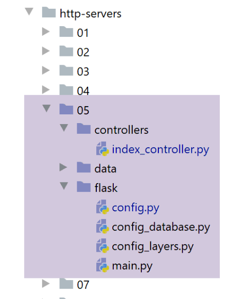
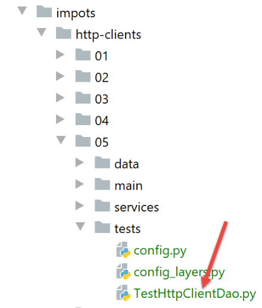

28. Ejercicio práctico: versión 10
28.1. Introducción
En los ejemplos de clientes del servidor de cálculo de impuestos, los hilos enviaban N solicitudes de manera secuencial si tenían que procesar a N contribuyentes. La idea aquí es enviar una sola solicitud que englobe a los N contribuyentes. Para cada uno de ellos, hay que enviar la información [marié, enfants, salaire]. Se puede enviar como parámetros:
- como parámetros de la solicitud URL. De esta manera, se obtendrá una solicitud URL larga y poco significativa;
- en el cuerpo (body) de la solicitud HTTP. Sabemos que este cuerpo queda oculto para el usuario que utiliza un navegador;
En ambos casos, se puede utilizar una solicitud [GET] o [POST]. Utilizaremos una solicitud POST con los parámetros encapsulados en el cuerpo de la solicitud HTTP.
La arquitectura cliente/servidor no ha cambiado:

28.2. El servidor web

El archivo [http-servers/05] se obtiene inicialmente al copiar el archivo [http-servers/02]. Volvemos a los intercambios jSON entre el cliente y el servidor. Ya vimos que pasar de jSON a XML es muy sencillo.
28.2.1. Configuración
La configuración de [config, config_database, config_layers] sigue siendo similar a la de las versiones anteriores. No volveremos a abordarla.
28.2.2. El script principal [main]
El script [main] es idéntico al de la carpeta [http-servers/02] que hemos copiado. Solo hay una diferencia:
# Inicio URL
@app.route('/', methods=['POST'])
@auth.login_required
def index():
…
- línea 2: ahora el URL se obtiene a través de un POST;
28.2.3. El controlador [index_controller]
El controlador [index_controller] evoluciona de la siguiente manera:
# importación de dependencias
import json
from flask_api import status
from werkzeug.local import LocalProxy
def execute(request: LocalProxy, config: dict) -> tuple:
# dependencias
from ImpôtsError import ImpôtsError
from TaxPayer import TaxPayer
# se recupera el cuerpo de la publicación; se espera una lista de diccionarios
msg_erreur = None
list_dict_taxpayers = None
# el cuerpo jSON del POST
request_text = request.data
try:
# que se transforma en una lista de diccionarios
list_dict_taxpayers = json.loads(request_text)
except BaseException as erreur:
# se registra el error
msg_erreur = f"le corps du POST n'est pas une chaîne jSON valide : {erreur}"
# ¿tenemos una lista no vacía?
if not msg_erreur and (not isinstance(list_dict_taxpayers, list) or len(list_dict_taxpayers) == 0):
# se registra el error
msg_erreur = "le corps du POST n'est pas une liste ou alors cette liste est vide"
# ¿Tenemos una lista de diccionarios?
if not msg_erreur:
erreur = False
i = 0
while not erreur and i < len(list_dict_taxpayers):
erreur = not isinstance(list_dict_taxpayers[i], dict)
i += 1
# ¿Error?
if erreur:
msg_erreur = "le corps du POST doit être une liste de dictionnaires"
# ¿Error?
if msg_erreur:
# se envía una respuesta de error al cliente
résultats = {"réponse": {"erreurs": [msg_erreur]}}
return résultats, status.HTTP_400_BAD_REQUEST
# se revisan los TaxPayers uno por uno
# al principio no hay errores
list_erreurs = []
for dict_taxpayer in list_dict_taxpayers:
# se crea un TaxPayer a partir de dict_taxpayer
msg_erreur = None
try:
# la siguiente operación eliminará los casos en los que los parámetros no sean
# de las propiedades de la clase TaxPayer, así como los casos en los que sus valores
# son incorrectos
TaxPayer().fromdict(dict_taxpayer)
except BaseException as erreur:
msg_erreur = f"{erreur}"
# ciertas claves deben estar presentes en el diccionario
if not msg_erreur:
# las claves [marié, enfants, salaire] deben estar presentes en el diccionario
keys = dict_taxpayer.keys()
if 'marié' not in keys or 'enfants' not in keys or 'salaire' not in keys:
msg_erreur = "le dictionnaire doit inclure les clés [marié, enfants, salaire]"
# ¿Hay errores?
if msg_erreur:
# se observa el error en el propio TaxPayer
dict_taxpayer['erreur'] = msg_erreur
# se agrega el TaxPayer a la lista de errores
list_erreurs.append(dict_taxpayer)
# Se han procesado todos los contribuyentes. ¿Hay algún error?
if list_erreurs:
# se envía una respuesta de error al cliente
résultats = {"réponse": {"erreurs": list_erreurs}}
return résultats, status.HTTP_400_BAD_REQUEST
# No hay errores, se puede seguir trabajando
# Recuperación de datos de la administración tributaria
admindata = config["admindata"]
métier = config["layers"]["métier"]
try:
# se procesan los TaxPayer uno por uno
list_taxpayers = []
for dict_taxpayer in list_dict_taxpayers:
# cálculo del impuesto
taxpayer = TaxPayer().fromdict(
{'marié': dict_taxpayer['marié'], 'enfants': dict_taxpayer['enfants'],
'salario': dict_taxpayer['salaire']})
métier.calculate_tax(taxpayer, admindata)
# se guarda el resultado como un diccionario
list_taxpayers.append(taxpayer.asdict())
# se envía la respuesta al cliente
return {"réponse": {"results": list_taxpayers}}, status.HTTP_200_OK
except ImpôtsError as erreur:
# se envía una respuesta de error al cliente
return {"réponse": {"erreurs": f"[{erreur}]"}}, status.HTTP_500_INTERNAL_SERVER_ERROR
- línea 9: el controlador recibe:
- la solicitud [request] del cliente;
- la configuración [config] del servidor;
- líneas 14-18: se recupera el cuerpo de POST. Los parámetros encapsulados en el cuerpo de la solicitud HTTP pueden codificarse de diferentes maneras. Ya hemos visto una: [x-www-form-urlencoded]. Aquí vamos a utilizar otra codificación: jSON;
- línea 18: [request.data] permite recuperar el cuerpo (body) de la solicitud HTTP. Aquí se recupera texto y sabemos que este texto proviene de jSON, que representa una lista de diccionarios [marié, enfants, salaire];
- líneas 19-24: se recupera esta lista de diccionarios;
- líneas 22-24: si la recuperación de jSON falló, se registra el error;
- líneas 26-28: si se detecta que el objeto recuperado no es una lista o que es una lista vacía, se registra el error;
- líneas 29-38: si se ha recuperado correctamente una lista, se verifica que sea efectivamente una lista de diccionarios;
- líneas 40-43: si hubo un error, nos detenemos ahí y enviamos una respuesta de error al cliente;
- líneas 45-69: ahora se revisa cada uno de los diccionarios:
- deben contener las claves [marié, enfants, salaire];
- deben permitir construir un objeto [TaxPayer] válido;
- líneas 65-69: si se ha detectado un error en un diccionario, este se agrega a ese mismo diccionario asociado a la clave «error»;
- líneas 72-75: los diccionarios con errores se han acumulado en la lista [list_erreurs]. Si esta lista no está vacía, se envía al cliente en una respuesta de error;
- línea 77: llegados a este punto, sabemos que podemos crear una lista de objetos de tipo [TaxPayer] a partir del cuerpo de la solicitud enviada por el cliente;
- líneas 84-91: se procesa la lista de diccionarios recibidos;
- línea 86: a partir de un diccionario, creamos un objeto [TaxPayer];
- línea 89: se calcula el impuesto de este [TaxPayer];
- línea 91: sabemos que el objeto [taxpayer] ha sido modificado por el cálculo del impuesto. Lo convertimos en un diccionario y lo agregamos a una lista de resultados;
- línea 93: se envía esta lista de resultados al cliente;
28.2.4. Pruebas del servidor
Vamos a probar el servidor con un cliente Postman:
- iniciamos el servidor web, el SGBD, y el servidor de correo [hMailServer];
- iniciamos el cliente Postman y su consola (Ctrl-Alt-C);

- en [1]: enviamos una solicitud a [POST];
- en [2]: la respuesta URL del servidor;
- en [3]: el cuerpo de la solicitud HTTP;
- en [5]: se indica que este cuerpo deberá enviarse en forma de cadena jSON;
- en [4]: se activa el modo [raw] para poder copiar y pegar una cadena jSON;
- en [6]: se pega la cadena jSON tomada de uno de los archivos [résultats.json] de las diferentes versiones. Luego, para cada contribuyente, solo se conservan las propiedades [marié, salaire, enfants];

- en [7], se revisan los encabezados HTTP que el cliente Postman enviará al servidor;
- en [8], vemos que le enviará un encabezado [Content-Type] indicándole que la solicitud contiene un cuerpo codificado en jSON. Esto se debe a la elección de [5] realizada anteriormente;

- en [9-12]: se incluyen en la solicitud los identificadores que espera el servidor;
Se envía esta solicitud. La respuesta del servidor es la siguiente:

- en [3], se recibió de jSON;
- en [4], el impuesto de los contribuyentes;
Veamos en la consola de Postman (Ctrl-Alt-C) el diálogo entre el cliente y el servidor que tuvo lugar:
El cliente Postman envió el siguiente texto:
- línea 1: el POST al servidor;
- línea 2: el encabezado de autenticación HTTP;
- línea 3: el cliente le indica al servidor que le envía una cadena jSON y que esta cadena tiene 824 bytes (línea 11);
- líneas 13-69: el cuerpo jSON de la solicitud;
El servidor le respondió con el siguiente texto:
HTTP/1.0 200 OK
Content-Type: application/json; charset=utf-8
Content-Length: 1461
Server: Werkzeug/1.0.1 Python/3.8.1
Date: Tue, 28 Jul 2020 07:16:34 GMT
{"réponse": {"results": [{"marié": "oui", "enfants": 2, "salaire": 55555, "impôt": 2814, "surcôte": 0, "taux": 0.14, "décôte": 0, "réduction": 0}, {"marié": "oui", "enfants": 2, "salaire": 50000, "impôt": 1384, "surcôte": 0, "taux": 0.14, "décôte": 384, "réduction": 347}, {"marié": "oui", "enfants": 3, "salaire": 50000, "impôt": 0, "surcôte": 0, "taux": 0.14, "décôte": 720, "réduction": 0}, {"marié": "non", "enfants": 2, "salaire": 100000, "impôt": 19884, "surcôte": 4480, "taux": 0.41, "décôte": 0, "réduction": 0}, {"marié": "non", "enfants": 3, "salaire": 100000, "impôt": 16782, "surcôte": 7176, "taux": 0.41, "décôte": 0, "réduction": 0}, {"marié": "oui", "enfants": 3, "salaire": 100000, "impôt": 9200, "surcôte": 2180, "taux": 0.3, "décôte": 0, "réduction": 0}, {"marié": "oui", "enfants": 5, "salaire": 100000, "impôt": 4230, "surcôte": 0, "taux": 0.14, "décôte": 0, "réduction": 0}, {"marié": "non", "enfants": 0, "salaire": 100000, "impôt": 22986, "surcôte": 0, "taux": 0.41, "décôte": 0, "réduction": 0}, {"marié": "oui", "enfants": 2, "salaire": 30000, "impôt": 0, "surcôte": 0, "taux": 0.0, "décôte": 0, "réduction": 0}, {"marié": "non", "enfants": 0, "salaire": 200000, "impôt": 64210, "surcôte": 7498, "taux": 0.45, "décôte": 0, "réduction": 0}, {"marié": "oui", "enfants": 3, "salaire": 200000, "impôt": 42842, "surcôte": 17283, "taux": 0.41, "décôte": 0, "réduction": 0}]}}
- línea 1: la solicitud se realizó con éxito;
- línea 2: el cuerpo de la respuesta del servidor es una cadena jSON. Esta tiene 1461 bytes (línea 3);
- línea 7: la respuesta jSON del servidor;
Ahora probemos algunos casos de error.
Caso 1: enviamos cualquier cosa
POST / HTTP/1.1
Authorization: Basic YWRtaW46YWRtaW4=
Content-Type: application/json
User-Agent: PostmanRuntime/7.26.2
Accept: */*
Cache-Control: no-cache
Postman-Token: 47652706-9744-46a0-a682-de010e5406c0
Host: localhost:5000
Accept-Encoding: gzip, deflate, br
Connection: keep-alive
Content-Length: 3
abc
HTTP/1.0 400 BAD REQUEST
Content-Type: application/json; charset=utf-8
Content-Length: 125
Server: Werkzeug/1.0.1 Python/3.8.1
Date: Tue, 28 Jul 2020 07:43:27 GMT
{"réponse": {"erreurs": ["le corps du POST n'est pas une chaîne jSON valide : Expecting value: line 1 column 1 (char 0)"]}}
- línea 13: se envió la cadena [abc], que no es una cadena jSON válida (línea 3);
- línea 15: el servidor responde con un código de error 400;
- línea 21: la respuesta jSON del servidor;
Caso 2: enviemos una cadena válida jSON que no sea una lista
POST / HTTP/1.1
Authorization: Basic YWRtaW46YWRtaW4=
Content-Type: application/json
User-Agent: PostmanRuntime/7.26.2
Accept: */*
Cache-Control: no-cache
Postman-Token: 03b64735-9239-47b3-b92d-be7c9ebc7559
Host: localhost:5000
Accept-Encoding: gzip, deflate, br
Connection: keep-alive
Content-Length: 17
{"att1":"value1"}
HTTP/1.0 400 BAD REQUEST
Content-Type: application/json; charset=utf-8
Content-Length: 97
Server: Werkzeug/1.0.1 Python/3.8.1
Date: Tue, 28 Jul 2020 07:50:11 GMT
{"réponse": {"erreurs": ["le corps du POST n'est pas une liste ou alors cette liste est vide"]}}
Caso 3: enviemos una cadena jSON que sea una lista cuyos elementos no sean todos diccionarios
POST / HTTP/1.1
Authorization: Basic YWRtaW46YWRtaW4=
Content-Type: application/json
User-Agent: PostmanRuntime/7.26.2
Accept: */*
Cache-Control: no-cache
Postman-Token: a1528a5f-777c-413f-b3be-7d4e9955b12a
Host: localhost:5000
Accept-Encoding: gzip, deflate, br
Connection: keep-alive
Content-Length: 7
[0,1,2]
HTTP/1.0 400 BAD REQUEST
Content-Type: application/json; charset=utf-8
Content-Length: 85
Server: Werkzeug/1.0.1 Python/3.8.1
Date: Tue, 28 Jul 2020 07:52:10 GMT
{"réponse": {"erreurs": ["le corps du POST doit être une liste de dictionnaires"]}}
Caso 4: enviemos una lista de diccionarios con un diccionario que no tenga las claves correctas
POST / HTTP/1.1
Authorization: Basic YWRtaW46YWRtaW4=
Content-Type: application/json
User-Agent: PostmanRuntime/7.26.2
Accept: */*
Cache-Control: no-cache
Postman-Token: ba964d81-c9d9-46ff-a521-b4c4e5639484
Host: localhost:5000
Accept-Encoding: gzip, deflate, br
Connection: keep-alive
Content-Length: 19
[{"att1":"value1"}]
HTTP/1.0 400 BAD REQUEST
Content-Type: application/json; charset=utf-8
Content-Length: 112
Server: Werkzeug/1.0.1 Python/3.8.1
Date: Tue, 28 Jul 2020 07:54:33 GMT
{"réponse": {"erreurs": [{"att1": "value1", "erreur": "MyException[2, la clé [att1] n'est pas autorisée]"}]}}
Caso 5: enviemos una lista de diccionarios con un diccionario al que le faltan claves:
POST / HTTP/1.1
Authorization: Basic YWRtaW46YWRtaW4=
Content-Type: application/json
User-Agent: PostmanRuntime/7.26.2
Accept: */*
Cache-Control: no-cache
Postman-Token: 98aec51d-f37d-4c14-81cd-c7ffcbbcdc65
Host: localhost:5000
Accept-Encoding: gzip, deflate, br
Connection: keep-alive
Content-Length: 18
[{"marié":"oui"}]
HTTP/1.0 400 BAD REQUEST
Content-Type: application/json; charset=utf-8
Content-Length: 125
Server: Werkzeug/1.0.1 Python/3.8.1
Date: Tue, 28 Jul 2020 07:56:40 GMT
{"réponse": {"erreurs": [{"marié": "oui", "erreur": "le dictionnaire doit inclure les clés [marié, enfants, salaire]"}]}}
Caso 6: enviemos una lista de diccionarios con un diccionario que tiene las claves correctas, pero algunas con valores erróneos:
POST / HTTP/1.1
Authorization: Basic YWRtaW46YWRtaW4=
Content-Type: application/json
User-Agent: PostmanRuntime/7.26.2
Accept: */*
Cache-Control: no-cache
Postman-Token: 3083e601-dee4-4e15-9ea4-fc0328d0fcf0
Host: localhost:5000
Accept-Encoding: gzip, deflate, br
Connection: keep-alive
Content-Length: 46
[{"marié":"x", "enfants":"x", "salaire":"x"}]
HTTP/1.0 400 BAD REQUEST
Content-Type: application/json; charset=utf-8
Content-Length: 167
Server: Werkzeug/1.0.1 Python/3.8.1
Date: Tue, 28 Jul 2020 07:59:32 GMT
{"réponse": {"erreurs": [{"marié": "x", "enfants": "x", "salaire": "x", "erreur": "MyException[31, l'attribut marié [x] doit avoir l'une des valeurs oui / non]"}]}}
28.3. El cliente web

La carpeta [http-clients/05] (versión 10) se obtiene inicialmente al copiar la carpeta [http-clients/02] (versión 7). Posteriormente se modifica.
28.3.1. La capa [dao]
La capa [dao] se implementa mediante la siguiente clase [ImpôtsDaoWithHttpClient]:
# importaciones
import requests
from flask_api import status
from AbstractImpôtsDao import AbstractImpôtsDao
from AdminData import AdminData
from ImpôtsError import ImpôtsError
from InterfaceImpôtsMétier import InterfaceImpôtsMétier
from TaxPayer import TaxPayer
class ImpôtsDaoWithHttpClient(AbstractImpôtsDao, InterfaceImpôtsMétier):
# constructor
def __init__(self, config: dict):
…
# método no utilizado
def get_admindata(self) -> AdminData:
pass
# cálculo del impuesto
def calculate_tax(self, taxpayer: TaxPayer, admindata: AdminData = None):
…
# cálculo del impuesto en modo masivo
def calculate_tax_in_bulk_mode(self, taxpayers: list) -> list:
# se permite que las excepciones se propaguen
# se transforman los contribuyentes en una lista de diccionarios
# solo se conservan las propiedades [marié, enfants, salaire]
list_dict_taxpayers = list(
map(lambda taxpayer:
taxpayer.asdict(included_keys=[
'_TaxPayer__marié',
'_TaxPayer__enfants',
'_TaxPayer__salaire']),
taxpayers))
# conexión al servidor
config_server = self.__config_server
if config_server['authBasic']:
response = requests.post(config_server['urlServer'], json=list_dict_taxpayers,
auth=(config_server["user"]["login"],
config_server["user"]["password"]))
else:
response = requests.post(config_server['urlServer'], json=list_dict_taxpayers)
# ¿modo de depuración?
if self.__debug:
# registrador
if not self.__logger:
self.__logger = self.__config['logger']
# se está iniciando sesión
self.__logger.write(f"{response.text}\n")
# código de estado de la respuesta HTTP
status_code = response.status_code
# se guarda la respuesta jSON en un diccionario
résultat = response.json()
# error si el código de estado es distinto de 200 OK
if status_code != status.HTTP_200_OK:
# se sabe que los errores se han asociado a la clave [erreurs] de la respuesta
raise ImpôtsError(93, résultat['réponse']['erreurs'])
# se sabe que el resultado se ha asociado a la clave [results] de la respuesta
list_dict_taxpayers2 = résultat['réponse']['results']
# se actualiza la lista inicial de contribuyentes con los resultados recibidos
for i in range(len(taxpayers)):
# Actualización de los contribuyentes [i]
taxpayers[i].fromdict(list_dict_taxpayers2[i])
# aquí se actualizó el parámetro [taxpayers] con los resultados del servidor
- líneas 1-26: el código permanece igual que en la versión 7 y en otras versiones;
- líneas 27-70: se introduce un nuevo método, [calculate_tax_in_bulk_mode], cuya función es calcular el impuesto de una lista de contribuyentes;
- línea 28: [taxpayers] es esta lista de contribuyentes;
- líneas 31-39: se pasa de una lista de objetos de tipo [TaxPayer] a una lista de diccionarios mediante la función [map];
- líneas 34-38: la función lambda utilizada transforma un objeto de tipo [TaxPayer] en un diccionario de tipo [dict] que contiene únicamente las claves [marié, enfants, salaire]. Para ello, se utiliza el parámetro denominado [included_keys] del método [BaseEntity.asdict]. Cabe recordar que, para conocer los nombres exactos de las propiedades que deben incluirse en los parámetros [excluded_keys, included_keys], se debe utilizar el diccionario predefinido [taxpayer.__dict__];
- líneas 41-48: conexión al servidor y obtención de su respuesta HTTP;
- líneas 44, 48:
- se utiliza el método estático [requests.post] para enviar un POST al servidor;
- se utiliza el parámetro denominado [json] para indicar que el cuerpo del POST es una cadena jSON. Esto tendrá dos consecuencias:
- el objeto asignado al parámetro denominado [json], en este caso una lista de diccionarios, se transformará en la cadena jSON;
- el encabezado
se incluirá en los encabezados HTTP del POST;
- línea 59: la respuesta jSON del servidor se deserializa en el diccionario [résultat];
- líneas 61-63: se gestiona el posible error enviado por el servidor;
- línea 65: los resultados del cálculo del impuesto se encuentran en una lista de diccionarios;
- líneas 67-69: estos resultados se utilizan para actualizar la lista inicial de contribuyentes [taxpayers] recibida inicialmente por el método, línea 28;
- línea 70: aquí se ha actualizado la lista inicial de contribuyentes con los resultados del cálculo del impuesto;
28.3.2. El script principal [main]
El script principal [main] cambia de la siguiente manera: solo se modifica la función [thread_function] ejecutada por los hilos creados por el cliente. El resto del código permanece igual.
# ejecución de la capa [dao] en un hilo
# «taxpayers» es una lista de contribuyentes
def thread_function(dao: ImpôtsDaoWithHttpClient, logger: Logger, taxpayers: list):
# registro de inicio del hilo
thread_name = threading.current_thread().name
nb_taxpayers = len(taxpayers)
# registro
logger.write(f"début du calcul de l'impôt des {nb_taxpayers} contribuables\n")
# se calcula el impuesto de los contribuyentes
dao.calculate_tax_in_bulk_mode(taxpayers)
# registro
logger.write(f"fin du calcul de l'impôt des {nb_taxpayers} contribuables\n")
- líneas 9-10: mientras que antes había un bucle que pasaba sucesivamente a cada uno de los contribuyentes al método [dao.calculate_tax], aquí solo se realiza una única llamada al método [dao.calculate_tax_in_bulk_mode], al que se pasan todos los contribuyentes;
28.3.3. Ejecución del cliente
Vamos a comparar los tiempos de ejecución de las versiones:
- 7, donde cada contribuyente es objeto de una consulta HTTP;
- 10 (esta), en la que se agrupan a los contribuyentes en una sola consulta HTTP;
En primer lugar, la versión 6. Para comparar ambas versiones, establecemos la propiedad [sleep_time] del servidor en cero para que no haya espera forzada de los hilos. Los registros del cliente son los siguientes:
2020-07-28 14:20:45.811347, Thread-1 : début du thread [Thread-1] avec 4 contribuable(s)
2020-07-28 14:20:45.811347, Thread-1 : début du calcul de l'impôt de {"id": 1, "marié": "oui", "enfants": 2, "salaire": 55555}
…
2020-07-28 14:20:45.913065, Thread-3 : fin du calcul de l'impôt de {"id": 11, "marié": "oui", "enfants": 3, "salaire": 200000, "impôt": 42842, "surcôte": 17283, "taux": 0.41, "décôte": 0, "réduction": 0}
2020-07-28 14:20:45.913065, Thread-3 : fin du thread [Thread-3]
El tiempo de ejecución del cliente para calcular el impuesto de 11 contribuyentes es, por lo tanto, [913065-811347= 101718], es decir, aproximadamente 102 milisegundos.
Hagamos lo mismo con la versión 10 (sleep_time del servidor en cero). Los registros del cliente son entonces los siguientes:
2020-07-28 14:25:31.871428, Thread-1 : début du calcul de l'impôt des 4 contribuables
2020-07-28 14:25:31.873594, Thread-2 : début du calcul de l'impôt des 3 contribuables
2020-07-28 14:25:31.877429, Thread-3 : début du calcul de l'impôt des 3 contribuables
2020-07-28 14:25:31.882855, Thread-4 : début du calcul de l'impôt des 1 contribuables
2020-07-28 14:25:31.930723, Thread-2 : {"réponse": {"results": [{"marié": "non", "enfants": 3, "salaire": 100000, "impôt": 16782, "surcôte": 7176, "taux": 0.41, "décôte": 0, "réduction": 0}, {"marié": "oui", "enfants": 3, "salaire": 100000, "impôt": 9200, "surcôte": 2180, "taux": 0.3, "décôte": 0, "réduction": 0}, {"marié": "oui", "enfants": 5, "salaire": 100000, "impôt": 4230, "surcôte": 0, "taux": 0.14, "décôte": 0, "réduction": 0}]}}
….
2020-07-28 14:25:31.935958, Thread-4 : fin du calcul de l'impôt des 1 contribuables
2020-07-28 14:25:31.935958, Thread-1 : fin du calcul de l'impôt des 4 contribuables
Por lo tanto, el tiempo de ejecución del cliente para calcular el impuesto de 11 contribuyentes es [935958-871428= 64530 ns] (línea 8 – línea 1), es decir, aproximadamente 65 milisegundos. Esta nueva versión 10 supone así una mejora de aproximadamente el 57 % con respecto a la versión 7.
28.3.4. Pruebas de la capa [dao] del cliente

La prueba [TestHttpClientDao] del cliente de la versión 10 es muy similar a la de la versión 7:
import unittest
from Logger import Logger
class TestHttpClientDao(unittest.TestCase):
def test_1(self) -> None:
from TaxPayer import TaxPayer
# {'casado': 'sí', 'hijos': 2, 'salario': 55555,
# 'impuesto': 2814, 'recargo': 0, 'descuento': 0, 'reducción': 0, 'tasa': 0.14}
taxpayer = TaxPayer().fromdict({"marié": "oui", "enfants": 2, "salaire": 55555})
dao.calculate_tax_in_bulk_mode([taxpayer])
# verificación
self.assertAlmostEqual(taxpayer.impôt, 2815, delta=1)
self.assertEqual(taxpayer.décôte, 0)
self.assertEqual(taxpayer.réduction, 0)
self.assertAlmostEqual(taxpayer.taux, 0.14, delta=0.01)
self.assertEqual(taxpayer.surcôte, 0)
…
if __name__ == '__main__':
# se configura la aplicación
import config
config = config.configure({})
# registrador
logger = Logger(config["logsFilename"])
# se guarda en la configuración
config["logger"] = logger
# se recupera la capa [dao]
dao = config["layers"]["dao"]
# se ejecutan los métodos de prueba
print("tests en cours...")
unittest.main()
- línea 14: en lugar de llamar al método [dao.calculate_tax], se llama al método [dao.calculate_tax_in_bulk_mode] al que se le pasa una lista (presencia de corchetes) de un contribuyente;
Todas las pruebas pasan.